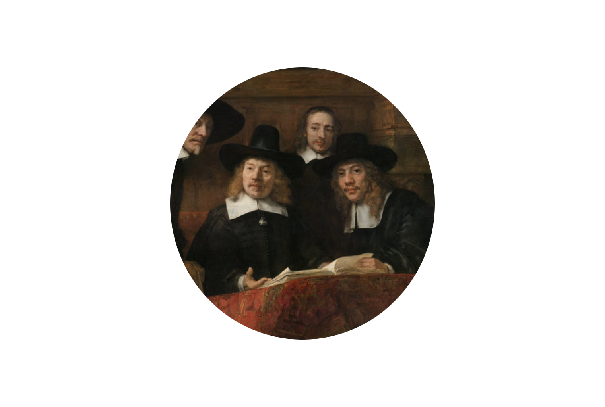

Formules van Macht
What ways are there to gain power? How does power relate to us, and what does this look like? A research into visual aspects of power, attempting to bridge instinctive observations and research. In my thesis I am trying to find tendency and decipher formulas to achieve power.
De waardijns van het Amsterdamse lakenbereidersgilde, bekend als ‘De Staalmeesters’, Rembrandt van Rijn, 1662
Wat is macht? Macht is de invloed die een persoon, bedrijf of organisatie heeft op anderen. Geld, politiek en macht zijn onlosmakelijk verbonden. Als iemand macht heeft, doen andere mensen datgene wat hen wordt opgedragen, althans dat wordt geacht. Macht kent verschillende definities, gradaties en uit zich in verschillende vormen. Een specifieke uiting van macht is gezag. Gezag is gebaseerd op de erkenning of rechtmatigheid om macht uit te oefenen. Macht over anderen lijkt verslavend en als men eenmaal macht heeft is het verleidelijk om die steeds verder uit te bouwen.Het is vergelijkbaar met een wedstrijd. Als je een wedstrijd wint komt er een enorme lading testosteron vrij in je hersenen. Dit zorgt ervoor dat je meer risico’s gaat nemen en zo ontstaat er een tunnelvisie die gericht is op succes, dit is het “winnaars effect”.
De kans is groot dat je een wedstrijd weer wint, het brein helpt de winnaar hiermee, hierdoor groeit je zelfvertrouwen en durf je steeds meer risico te nemen. Ook is het moeilijk om eenmaal verworven macht weer af te staan. Je kan macht uitstralen, wat niet per definitie betekend dat je ook daadwerkelijk macht hebt. Het uitstralen van macht kan bijvoorbeeld doormiddel van kleding, een woning (materieel) of middels het sociaal milieu waarin je je verkeert. Je kan als groep gezamenlijk macht uitstralen/hebben, maar ook als individu. Je kunt ook geboren worden met macht door de familie waar je vandaan komt (politiek) Maar je kunt jezelf ook macht aanleren, dit kan bewust of onbewust zijn.

De waardijns van het Amsterdamse lakenbereidersgilde, bekend als ‘De Staalmeesters’, Rembrandt van Rijn, 1662
Mijn interesse gaat uit naar wat macht is en op wat voor verschillende manieren macht toonbaar kan worden voor buitenstaanders en toeschouwers, mensen die buiten deze kringen vallen en van een afstand deze situaties bekijken. Dit zijn mijn eigen gekozen onderwerpen situaties en vergelijkingen. Ik wil je graag de overeenkomsten van macht tonen die ik in deze gevonden situaties onderzocht heb.
Mijn interesse gaat uit naar wat macht is en op wat voor verschillende manieren macht toonbaar kan worden voor buitenstaanders en toeschouwers, mensen die buiten deze kringen vallen en van een afstand deze situaties bekijken. Dit zijn mijn eigen gekozen onderwerpen situaties en vergelijkingen. Ik wil je graag de overeenkomsten van macht tonen die ik in deze gevonden situaties onderzocht heb.
Mijn interesse gaat uit naar wat macht is en op wat voor verschillende manieren macht toonbaar kan worden voor buitenstaanders en toeschouwers, mensen die buiten deze kringen vallen en van een afstand deze situaties bekijken. Dit zijn mijn eigen gekozen onderwerpen situaties en vergelijkingen. Ik wil je graag de overeenkomsten van macht tonen die ik in deze gevonden situaties onderzocht heb.

De waardijns van het Amsterdamse lakenbereidersgilde, bekend als ‘De Staalmeesters’, Rembrandt van Rijn, 1662
De kans is groot dat je een wedstrijd weer wint, het brein helpt de winnaar hiermee, hierdoor groeit je zelfvertrouwen en durf je steeds meer risico te nemen. Ook is het moeilijk om eenmaal verworven macht weer af te staan. Je kan macht uitstralen, wat niet per definitie betekend dat je ook daadwerkelijk macht hebt. Het uitstralen van macht kan bijvoorbeeld doormiddel van kleding, een woning (materieel) of middels het sociaal milieu waarin je je verkeert. Je kan als groep gezamenlijk macht uitstralen/hebben, maar ook als individu. Je kunt ook geboren worden met macht door de familie waar je vandaan komt (politiek) Maar je kunt jezelf ook macht aanleren, dit kan bewust of onbewust zijn.
De kans is groot dat je een wedstrijd weer wint, het brein helpt de winnaar hiermee, hierdoor groeit je zelfvertrouwen en durf je steeds meer risico te nemen. Ook is het moeilijk om eenmaal verworven macht weer af te staan. Je kan macht uitstralen, wat niet per definitie betekend dat je ook daadwerkelijk macht hebt. Het uitstralen van macht kan bijvoorbeeld doormiddel van kleding, een woning (materieel) of middels het sociaal milieu waarin je je verkeert. Je kan als groep gezamenlijk macht uitstralen/hebben, maar ook als individu. Je kunt ook geboren worden met macht door de familie waar je vandaan komt (politiek) Maar je kunt jezelf ook macht aanleren, dit kan bewust of onbewust zijn.
De kans is groot dat je een wedstrijd weer wint, het brein helpt de winnaar hiermee, hierdoor groeit je zelfvertrouwen en durf je steeds meer risico te nemen. Ook is het moeilijk om eenmaal verworven macht weer af te staan. Je kan macht uitstralen, wat niet per definitie betekend dat je ook daadwerkelijk macht hebt. Het uitstralen van macht kan bijvoorbeeld doormiddel van kleding, een woning (materieel) of middels het sociaal milieu waarin je je verkeert. Je kan als groep gezamenlijk macht uitstralen/hebben, maar ook als individu. Je kunt ook geboren worden met macht door de familie waar je vandaan komt (politiek) Maar je kunt jezelf ook macht aanleren, dit kan bewust of onbewust zijn.
Julika Rudelius, "Rites of Passage"

00:31
00:52

01:39
01:52

02:21

02:35
Gefilmd in traditionele kantoren en lounges in Washington D.C, de film toont het spel van macht en afhankelijkheid, overheersing en gehoorzaamheid tussen invloedrijke politieke figuren en stagiaires aan het begin van hun professionele carrière in de regering. De aarzelende relatie tussen politicus en stagiair, meester en leerling, wordt gepresenteerd als een bijna erotisch spel waarbij de onderscheidende aantrekkingskracht van macht een natuurlijk gevolg is en een ingrediënt van ‘charismatische leiderschap’.
De toeschouwer volgt een reeks gesprekken van ambitieuze jonge mannen en hun superieuren. Delen van conversaties worden afwisselend op twee schermen vertoond. ‘’Kun jij een charismatische leider worden? Hoe zorg je dat mensen jou volgen? Jij verwart de boodschapper met de boodschap. Je moet zorgen dat mensen de boodschapper volgen; de boodschap is niet belangrijk.’’Rites of passage werd gemaakt tijdens de laatste fase van de Amerikaanse verkiezingen in 2008 en de onrust op Wall Street.
De video gaat vooral ook over de non-verbale communicatie tussen de oudere heren en hun protegés. Over de ongemakkelijk blik van jongens die door hun leermeesters worden gekeurd, een hand op hun schouder gelegd krijgen of bijna verheerlijkend worden aangestaard. Het lijkt allemaal spontaan en echt te zijn, maar tegelijk keren bepaalde tekstfragmenten bij verschillende figuren terug, wat de indruk maakt dat alles ingestudeerd is.